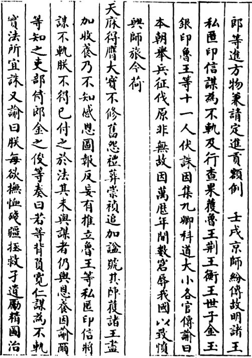
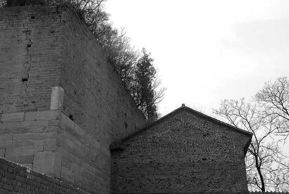

我还有一些意犹未尽的话。朱由崧更像一个意念、一个符号。在整个剧情中，他似乎是一种表现主义的存在，而非有血有肉的现实主义人物。提起此人，我总是陷于一种恍惚：一方面，至今无法道出那张脸是方是圆，更遑论上面的眉目五官；另一方面，我眼前又确确实实晃动着属于他的非常鲜明的表情——无所谓、爱谁谁、酒足饭饱、睡眼惺忪、嬉笑自若、轻松乃至轻佻……它们呼之欲出，触手可及。我非常奇怪，为什么对一个人的面目毫无概念，同时却能清晰看见他的表情？而一再回味敛思，才终于意识到，我所见并非朱由崧本人的脸，我看见的是飘浮在空中的一副副面具，它们由朱明王朝某些魂魄凝聚积淀而成，环绕着朱由崧，在他脸上交替变换。

《世祖章皇帝实录》卷二六：朱由崧结局
满清将朱由崧逮至北京，翌年，以栽赃手法声称搜得“私匿印信”， 以“ 将谋不轨” 罪名，将在押的前明宗室十一人一并处死。记述中避提朱由崧，把他隐在“鲁王等”字样之内。

王黑子楼
明末建筑遗存，位于洛阳新安县仓头镇孙都村。王黑子本名王应成，万历十三年生。2011 年9 月9 日《洛阳日报》报道：“相传，王黑子与福王朱常洵是金兰之交，黑子楼即因王黑子思念福王而建。”“有关专家考证楼顶遗迹及残留楼基后称，王黑子楼应是一座为防盗匪、战乱而建的碉堡式建筑，防御对象主要是闯王李自成的起义军。”
以“无脸”或面具方式演完谢幕人角色的朱由崧，其最后消失只留下一个背影——他被清军押往北京，回到明朝这座已沦丧多日的第一首都以及他本人的出生地。这远去的背影，就是他最后形象。从安徽被擒回南京时，人们尚能从别的角度观察他：“弘光以无幔小轿入城，首蒙包头，身衣蓝布衣，以油扇掩面……夹路百姓唾骂，有投瓦砾者。”[31]而离开南京以后，他永恒地保持着背影状态，虽然此后他存活达一年以上，但从历史叙述的文字层面，再也没有转过身来。谁都没有描述过背影之后的形象，他应是在绝密的情形中，入了北京，随后消失在高墙之后。其最后结局，钱海岳《南明史》述为：
二年五月甲子，清以弓弦勒令自尽，崩年四十。是日大风，凶问至南京，父老皆为流涕。后合葬河南孝哲皇后陵。鲁王监国，上谥曰赧皇帝；及幸舟山，上庙谥曰质宗安皇帝。永历十一年四月，改上今谥曰简皇帝，庙号安宗。[32]
此处的“二年”，为弘光二年（1646），非顺治二年（1645），因为钱氏《南明史》坚持奉明朝正朔。二年五月甲子，换为公历便是1646年7月1日。钱氏所述时间及情节，出处不明。我想，他必有所据，只是我在自己所阅中还没见到。我知道的结局，有些不同：
壬戌，京师纷传故明诸王私匿印信，谋为不轨，及行查，果获鲁王、荆王、衡王世子金玉银印。鲁王等十一人伏诛。因集九卿科道大小各官传谕曰：“本朝举兵征伐，原非无故，因万历年间数窘辱我国，以致愤兴师旅。今荷天庥得膺大宝，不修旧怨，礼葬崇祯，追加谥号，其阵获诸王尽加收养，乃不知感恩图报，反妄有推立鲁王等私匿印信，将谋不轨。朕不得已，付之于法。其未与谋者，仍与恩养。因谕尔等知之。”[33]
这是《清世祖实录》的记载，王先谦《东华录》有一模一样的文字。它们所述受害时间略早，为五月壬戌（十七日，公历6月29日）。也可能壬戌日被抓，而甲子日（五月十九日）被杀，中间隔了两天。清官方记载回避了处死方式（用弓弦勒死），也没有提及“福王”字样，而以“鲁王等十一人”笼统称之。显然，满清虽从未承认朱由崧为明朝最后一位皇帝，实际仍忌之甚深，以致相当鄙诈地隐去他名字，藏于“等十一人”。顺治三年五月的行动，既是对前明诸王的公然的一揽子屠杀——“私匿印信”、“谋反”等，不必说都是拙劣的故事——同时又是一个掩人耳目的方案。遍查清朝官史，没有朱由崧何年何月死于何处的半点记载，秘密都在“等十一人”这几个字。
[1] 许洽《眉叟年谱》，《丹午笔记•吴城日记•五石脂》，江苏古籍出版社，1999，第255页。
[2] 张廷玉等《明史》卷一百二十，中华书局，1974，第3650页。
[3] 钱仲联主编《清诗纪事•明遗民卷》，江苏古籍出版社，1987，第375页。
[4] 同上，第380页。
[5] 抱阳生《甲申朝事小纪》，书目文献出版社，1987，第538页。
[6] 计六奇《明季南略》，中华书局，2008，第156页。
[7] 孔尚任《桃花扇》，人民文学出版社，1982，第160页。
[8] 黄宗羲《思旧录》，沈士柱，《黄宗羲全集》第一册，浙江古籍出版社，1993，第354-355页。
[9] 李清《南渡录》，《南明史料（八种）》，江苏古籍出版社，1999，第415页。
[10] 沈德符《万历野获编》，中华书局，1997，第547页。
[11] 同上，第86页。
[12] 黄宗羲《明夷待访录》，《黄宗羲全集》第一册，浙江古籍出版社，第2页。
[13] 杜牧《阿房宫赋》，刘盼遂、郭预衡主编《中国历代散文选》下册，北京出版社，1981，第154页。
[14] 文秉《甲乙事案》，《南明史料（八种）》，江苏古籍出版社，1999，第431页。
[15] 计六奇《明季南略》，中华书局，2008，第208页。
[16] 李清《南渡录》，《南明史料（八种）》，江苏古籍出版社，1999，第126页。
[17] 徐鼒《小腆纪年附考》，中华书局，2006，第376页。
[18] 计六奇《明季南略》，中华书局，1984，第1页。
[19] 徐鼒《小腆纪年附考》，中华书局，2006，第158页。
[20] 同上，第164页。
[21] 同上，第173页。
[22] 计六奇《明季南略》，中华书局，1984，第160页。
[23] 徐鼒《小腆纪年附考》，中华书局，2006，第326页。
[24] 李清《三垣笔记》，中华书局，1997，第122页。
[25] 徐鼒《小腆纪年附考》，中华书局，2006，第327页。
[26] 《明武宗实录》，国立北平图书馆藏红格钞本，中央研究院历史研究所校印，第0203-0348页。
[27] 杜牧《阿房宫赋》，刘盼遂、郭预衡主编《中国历代散文选》下册，北京出版社，1981，第153页。
[28] 爱新觉罗•胤禛《大义觉迷录》，近代中国史料丛刊第三十六辑，文海出版社影印本，1966，第161-162页。
[29] 计六奇《明季南略》，中华书局，1984，第224页。
[30] 同上。
[31] 计六奇《明季南略》，中华书局，1984，第224页。
[32] 钱海岳《南明史》，中华书局，2006，第55页。
[33] 《清实录》第三册《世祖章皇帝实录》，中华书局影印，1985，第220-221页。